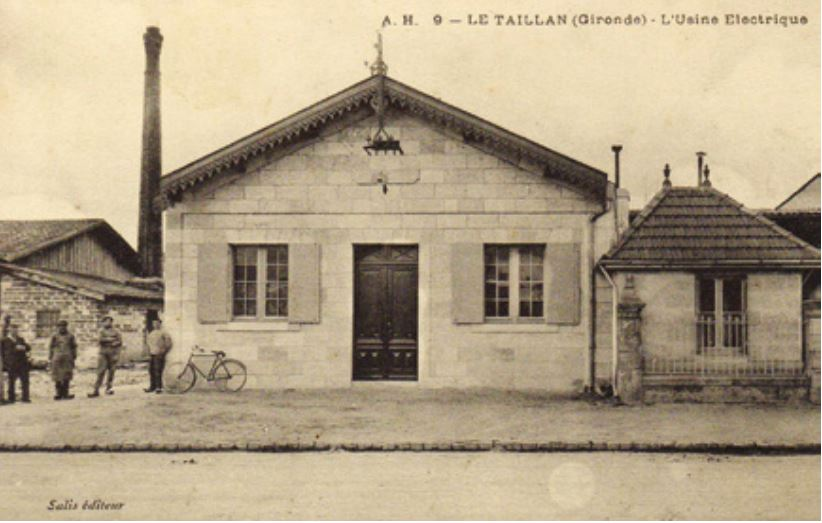

- Ah les ptits Tristan et Marinette, vous avez pas vot’ ballon? j’aurais bien fait 2-3 passes avec vous pour me détendre - Ben justement, on l’a perdu et on le cherche à travers toute la ville, mais rien… - Dépéchez vous de le retrouver car y’a match ce we !!! Faudrait pas devoir annuler la partie. Mais vous allez bien finir par retrouver…